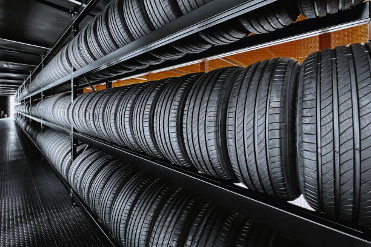

CHICHELIN
Кратко о нас
СHICHELIN - это Российское предприятие, занимающееся производством качественных шин для всевозможных видов транспорта на протяжении полувека. Вдобавок CHICHELIN всегда способствовал развитию взаимодействия между людьми и открытости, предлагая широкий спектр решений для обеспечения безопасности, комфорта и экологичности путешествий, а также новых впечатлений

Структура изделия
Натуральный каучук
Компонент добываемый из сока бразильской гевеи. Используется в резиновом составе боковин моделей,
гарантируя эластичность и упругость, существенно улучшая маневренность
Искусственный каучук
Непосредственно влияет на ходовые показатели.
От твердости каучуковой смеси зависит показатели износа, сцепления и торможения.
Для высокоскоростных моделей состав используется более жесткий каучук,
а для классических дождевых - более мягкий
Технический углерод
Представленный материал занимает 1/3 состава и
обозначает для изделия такие характеристики как износоустойчивость и прочность.
Также дает изделию характерную цветовую гамму
Диоксид кремния и силика
Силика используется, прежде всего, в производстве зимней автошины.
Диоксид кремния обеспечивает резину эластичностью, мягкостью, комфортностью и великолепным сцеплением с мокрой дорогой.
Но главным преимуществом является стойкость к низким температурам.
Шины с содержанием силики характеризуются как экологически чистые
Сера
Сера используется как вспомогательный элемент для связи молекул полимеров.
Это отражается на целостности, прочности и эластичности шины.

Шины для всевозможных видов транспорта

Легковые автомобили